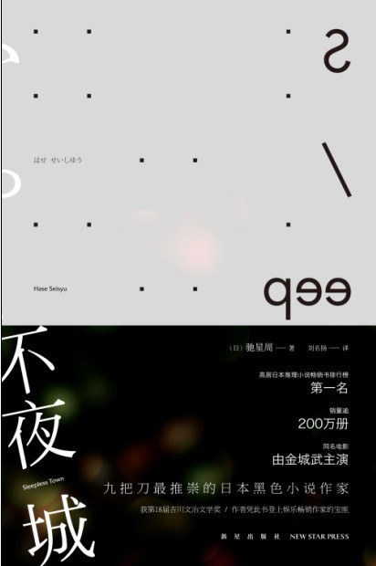
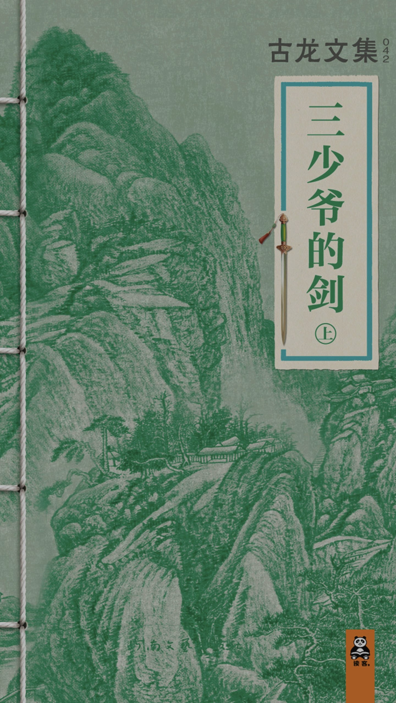
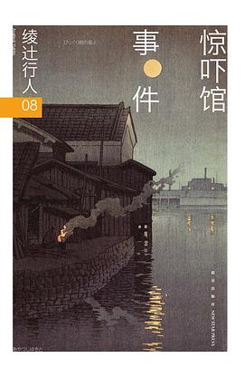
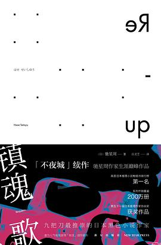
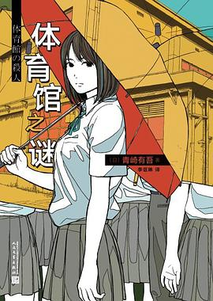

← 生活记录
RD’s BookLife
《绿野仙踪》
2026年2月21日
[美] 莱曼·弗兰克·鲍姆
所以Dorothy为什么这么火呢？

《不夜城》
2026年6月9日
[日] 驰星周
看的是台译本电子书。简中实体书与之相比，为了出版做的修改挺多的。也是没办法。

《三少爷的剑》
2026年7月4日
古龙
翠云峰，碧水湖，神剑山庄的谢家三少爷谢晓峰！太能装B了~~~
散文＋童话的结构确实很难写，而且古龙没写完没修订。
真是遗憾。

《惊吓馆事件》
2026年7月18日
[日]绫辻行人
一坨
案子太基础了，而且完全没仔细打磨。最后的发散莫名其妙

《镇魂歌》
2026年7月21日
[日]驰星周
故事的发展全基于两个主角是奇葩。没有正常人。
比第一部更冷更硬。人物更多，情节更加猎奇。

《体育馆之谜》
2026年8月20日
[日]青崎有吾
逻辑流确实不错。但是诡计也太平庸了。没有新本格有想象力啊。
二次元风格的侦探/判案也不是一定要写成轻小说吧。文笔连零食都不如了属于是。